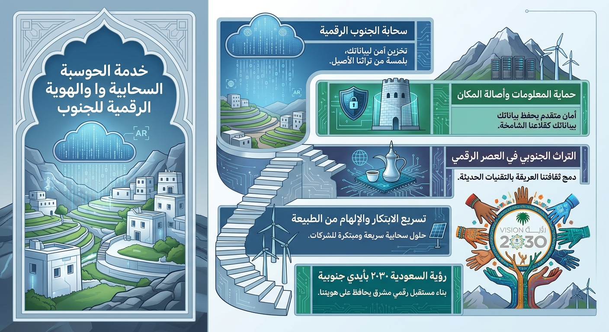

بسام علي ثامر القرني
مشروع تخرج منصة الحوسبة السحابية الذكية (AI-Powered Cloud Computing Portfolio)
مرحباً بكم في محفظتي الرقمية ومشروعي التقني للتخرج في تخصص الحوسبة السحابية وإدارة أنظمة الشبكات. مستلهمين من عراقة التراث الجنوبي الأصيل وفن القط العسيري الهندسي، يدمج هذا المشروع بين الفهم التقني العميق للحوسبة السحابية وأحدث أدوات الذكاء الاصطناعي التوليدي تماشياً مع رؤية المملكة العربية السعودية 2030.
2. قسم البحث المعرفي للحوسبة السحابية
بحث علمي عميق وموثق يغطي محاور الحوسبة السحابية الستة الرئيسية وفق متطلبات الكلية.
التعريف بالمفهوم والأهمية الاستراتيجية
دراسة معمارية لخصائص الحوسبة السحابية وفق (NIST)، متضمنة التوافر الذاتي عند الطلب، الوصول الواسع، وتجميع الموارد بكفاءة استراتيجية عالية.
أنواع ونماذج النشر (Cloud Types)
تحليل شامل لأنماط السحابة: العامة، الخاصة، الهجينة، والمتعددة لضمان أمان البيانات ومرونتها.
نماذج الخدمات السحابية الأساسية
تفصيل هرم الخدمات الثلاث: البنية التحتية كخدمة (IaaS)، المنصة كخدمة (PaaS)، والبرمجيات كخدمة (SaaS).
مقارنة شاملة بين مزودي الخدمة الكبار
تقييم مقارن لأبرز المزودين عالمياً ووطنياً (AWS, Azure, GCP, STC Cloud) مع الالتزام بضوابط NCA.
التطور التاريخي والمستقبلي للحوسبة
استعراض الجذور بدءاً من الحوسبة المركزية وصولاً إلى السحب الحديثة وتقنيات الذكاء الاصطناعي التوليدي.
الفرص الوظيفية وسوق العمل السعودي
رصد الوظائف والشهادات الاحترافية المطلوبة في المملكة تماشياً مع رؤية السعودية 2030.
3. الوسائط المتعددة والإنفوجرافيك التقني
الفيديو التعريفي للمتدرب، البودكاست التقني الصوتي، والإنفوجرافيك الشامل للمشروع.
الملخص التنفيذي للمتدرب بسام القرني
حلقة نقاشية: الحوسبة السحابية في السعودية
تطور_الحوسبة_والذكاء_الاصطناعي_في_السعودية.m4a[cite: 5]
انقر للتشغيل والاستماع للحلقة
خدمة الحوسبة السحابية والهوية الرقمية للجنوب

4. القسم الهندسي والتقني والمساعد الذكي
مخطط بنية سحابية ثلاثية الطبقات وشات بوت ذكي للإجابة الفورية.
المساعد الذكي التفاعلي (Gemini AI Advisor)
جاهز للإجابة على استفسارات لجنة المناقشة